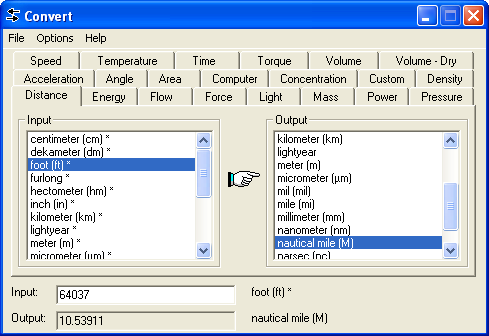

| Menu Ferramentas |
|
Chama o
conversor de unidades "stand alone" para Windows.
Copyright Joshua F. Madison.
Para acessar a
ferramenta, clique em “Ferramentas ► Ferramentas
externas ... ► Conversor de
unidades”.

Descrição e Operação
Selecione a dimensão das unidades desejadas nas abas da parte superior da janela.
Selecione a unidade de entrada na lista "Imput" e a unidade de saída na lista "Output".
Insira o valor numérico de entrada no campo "Input", na parte inferior da janela. O valor correspondente na unidade de saída será apresentado no campo "Output".
Sair
Para sair da
ferramenta, clique no botão de fechamento da janela no canto superior
direito.
| |
Desempenho em curva | Exportar para o Google Earth | |